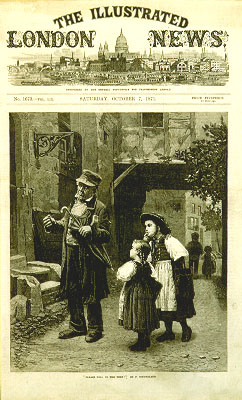

義助慰安婦 —— 李敖百件珍藏義賣藝術品（第63件） 品 名：F2. 英國版刻看表圖 預估價：2 萬 成交價：3 萬 說 明： 這張版刻是在 1871 年印製的，當時是幅英國報紙的插圖（1871 年 10 月 7 日）。圖中有二個小孩在問一位老人現在幾點鐘了﹖而老人則認真地看著懷表。這幅圖刻得很細緻。中國的印刷圖片製作方式相形之下顯得粗糙。 
這張版刻是在 1871 年印製的，當時是幅英國報紙的插圖（1871 年 10 月 7 日）。圖中有二個小孩在問一位老人現在幾點鐘了﹖而老人則認真地看著懷表。這幅圖刻得很細緻。中國的印刷圖片製作方式相形之下顯得粗糙。